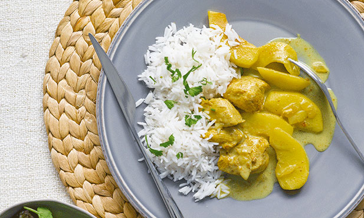
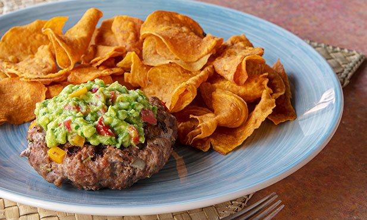

Aprende a cozinhar connosco
Carne

Caril de frango
Tempo: 38 min
Dificuldade: Média
Quantidade: 4 pessoas

Hamburguer
Tempo: 30 min
Dificuldade: Média
Quantidade: 4 pessoas

Lasanha
Tempo: 50 min
Dificuldade: Fácil
Quantidade: 4 pessoas